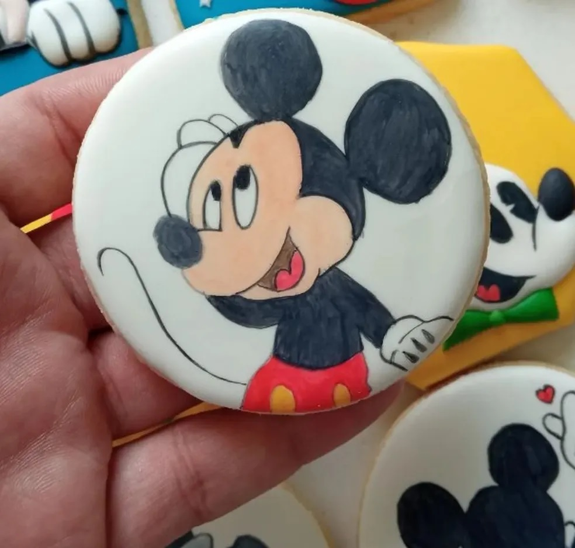
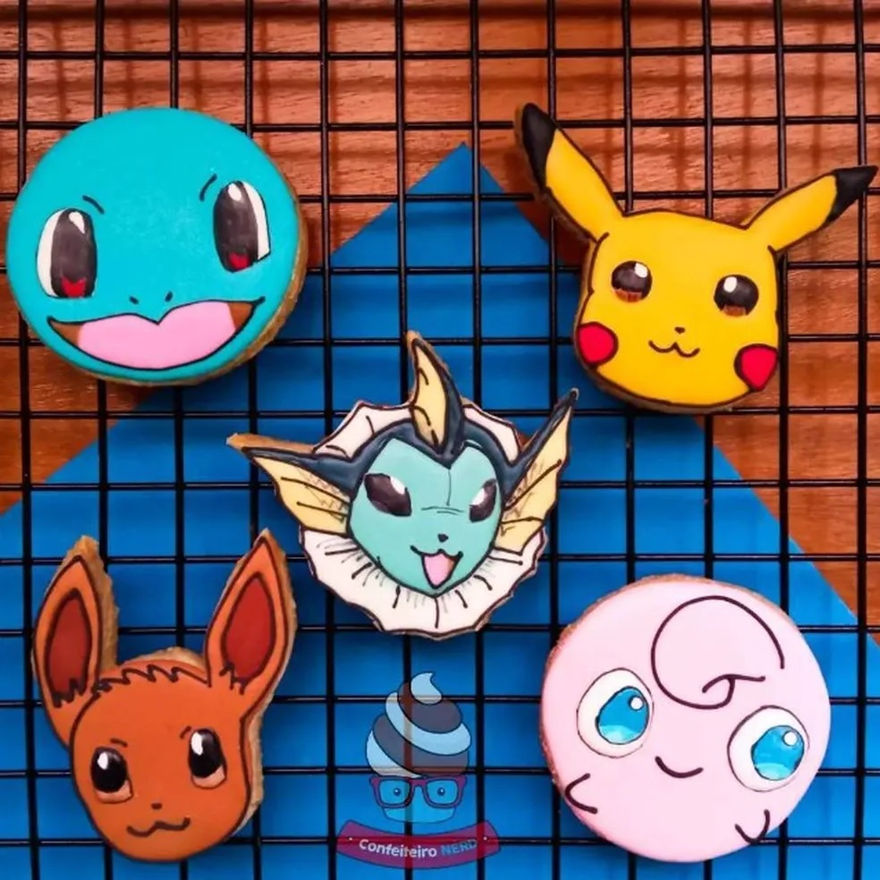

Notícias
Publicado em 10 de maio de 2023
Mario Bros, Toy Story e Pokémon: apaixonado por cultura pop, ‘confeiteiro nerd’ cria biscoitos inspirados no mundo geek
"Thiago Xavier faz sucesso se inspirando em personagens famosos. Recentemente, o morador de Juiz de Fora participou da 9ª temporada do reality ‘Que Seja Doce’, da GNT."
POR MISTEREU
Em um primeiro momento, pode parecer um botton ou até mesmo imã de geladeira. Nas fotos, é preciso ficar atento à legenda para descobrir que, na verdade, o trabalho artístico –feito à base de farinha, açúcar, ovos – é uma obra de arte comestível.
Da paixão pela cultura pop e do talento na cozinha, o morador de Juiz de Fora Thiago Xavier se inspira no universo geek para criar biscoitos, cookies e cupcakes. No momento, os personagens mais requisitados nos pedidos têm sido Mario Bros, Toy Story e Homem Aranha.
O "Confeiteiro Nerd", como Thiago se define nas redes sociais, diz se sentir orgulhoso quando a iguaria é rapidamente devorada, mesmo que ela demore algum bom tempo para produzi-la. Em alguns casos, segundo ele, são necessárias até 3 horas.
Ao NerdNauta, ele falou também sobre a participação na 9ª temporada do reality Que Seja Doce, da GNT, e traçou planos para o futuro.
Produção ao estilo artesanal
Depois de sair de um emprego de carteira assinada e se mudar para Juiz de Fora em 2015, o carioca Thiago, que sempre teve boa relação com a gastronomia e cozinha, resolveu aproveitar o tempo livre e buscar nova fonte de renda.
No ano seguinte, passou a apostar nos biscoitos decorados.
"Em 2016, fiz um workshop sobre cookies decorados, passei a assistir vídeos pela internet, depois participei de um congresso on-line, onde comecei a conhecer mais gente”, explica ele.
Atualmente, os biscoitos são feitos para comercialização em um estabelecimento comercial em Juiz de Fora e em pedidos solicitados pelas redes sociais. Outra parte vai para festas infantis.
A complexidade da produção, no entanto, não permite venda em grande escala. Bem-humorado, ele se diverte quando as mães reclamam do valor dos produtos.
Elas normalmente estão acostumadas com aqueles biscoitos recheados com desenho, que a gente compra no mercado. Aí perguntam quanto é o cento e acabam reclamando que é caro
Os itens costumam ser comercializados entre R$ 10 e R$ 15 a unidade. “O negócio é demorado. Tem que fazer a massa, moldar. Em alguns casos, a demora é de até 3 horas”, explica.
Satisfação em ver a obra de arte devorada
Por mais que o processo seja demorado, Thiago diz se sentir satisfeito quando o biscoito é rapidamente devorado. Assim, segundo ele, é sinal que o cliente gostou.
“Teve uma moça que falou que não tinha coragem de comer e congelou o biscoito, mas gosto mesmo é que a pessoa pegue e coma”, diz em tom bem-humorado.
Conforme ele, os biscoitos mais solicitados têm sido Toy Story e Mario Bros. Da época em que trabalhava com decoração de festa, ele se recorda também de uma temática inusitada. “Fiz para a festinha de uma mestranda, que estudava aquele determinado tipo de carrapato”, recorda ele aos risos.
“Acho que tudo começou com eles, os pokémons. Naquela época, como o desenho animado passava na hora da escola, lembro também que minha mãe gravava os episódios em uma fita VHS. Depois, tive catapora, não pude sair de casa por um tempo e comecei a desenhá-los", complementou.
‘Que Seja Doce’ e sonhos
Para Thiago, a participação na 9ª temporada do reality Que Seja Doce era algo, até então, inimaginável. O programa, gravado no fim do ano passado, foi ao ar no dia 3 de abril e reexibido no dia seguinte.
O confeiteiro fez dupla com a amiga Carol Viana na produção de doces em formato de bichos. Uma das receitas foi o “Ursinhos, I love you”, feito à base de chocolate, recheado com maracujá e morango.
Trabalho com chocolate desde 2008 e ser elogiado por confeiteiros super reconhecidos foi demais. Foram dois dias de gravação, nos dias 6 e 7 de novembro. Dia 6 era meu aniversário e foi maravilhoso.
Ao analisar a escolha que fez, de abandonar o emprego fixo e investir no sonho, ele se diz satisfeito, ainda que os biscoitos não consigam oferecer toda a renda que necessita. Como complemento ao trabalho, ele também presta serviços de "dog walker" (passeador de cachorros, em tradução livre). “Quando eu era mais novo, meu sonho era fazer medicina veterinária, algo que não rolou. Sou feliz fazendo as duas coisas. Larguei o emprego que não estava me fazendo feliz, me permiti tentar e valeu a pena”.